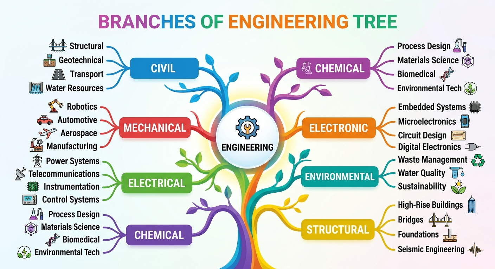
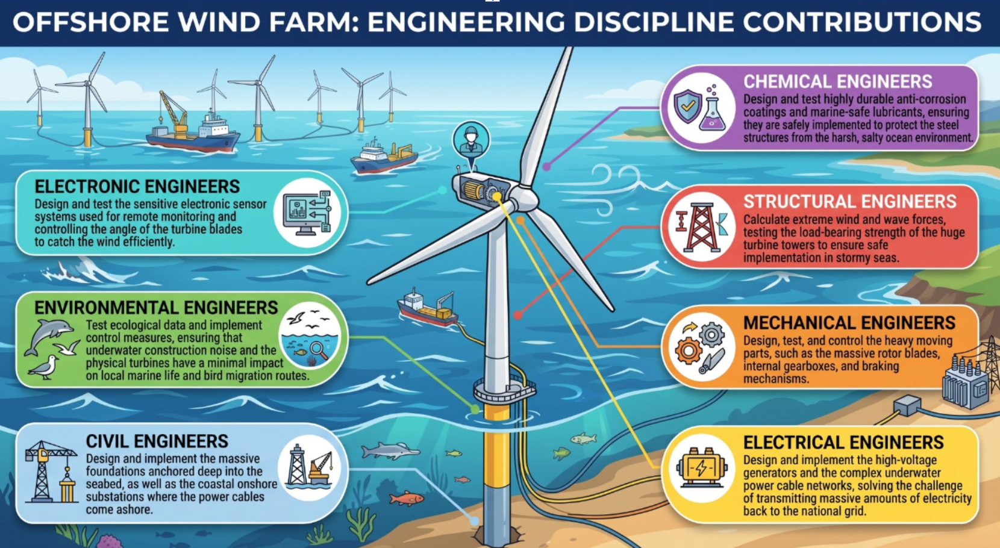
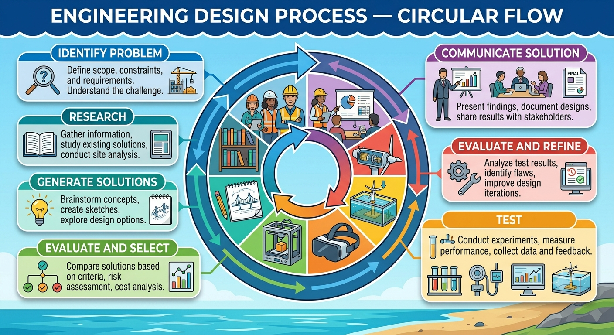

Section 1: What is Engineering?
Engineering is the application of science, mathematics and technology to design and build solutions to real-world problems. Engineers improve the world around us — from the bridges we cross, to the phones in our pockets, to the medicines that keep us healthy.
The work of engineers is everywhere. Without engineering there would be no clean water supply, no electricity grid, no roads, no internet and no modern medicine. Engineering shapes civilisation.

Section 2: The Seven Main Branches of Engineering
The QS specification requires you to know seven main branches. Each branch has a different focus, but they frequently work together on the same project.
Examples of work: Roads, bridges, tunnels, dams, airports, water treatment plants, sewage systems, railway lines.
Real project example: Designing and implementing the deep underground tunnels and water routing for the Shieldhall Tunnel in Glasgow, ensuring they integrate safely into the city's complex drainage and flood management system.
Examples of work: Load-bearing frames of buildings, bridges, towers, offshore platforms.
Real project example: Calculating wind forces and testing the load-bearing strength of the internal steel framework of The Kelpies, ensuring safe implementation so the 30-metre sculptures withstand severe storms without failing.
Examples of work: Engines, turbines, manufacturing machinery, robots, HVAC systems, prosthetic limbs.
Real project example: Designing, testing, and controlling the complex mechanical drive gears and electric motors that rotate The Falkirk Wheel to lift and transfer canal boats between two waterways.
Examples of work: Power stations, national grid, electric motors, transformers, lighting systems, wind turbines.
Real project example: Designing and implementing the high-voltage electrical cabling and substations for Whitelee Windfarm, solving the challenge of transmitting massive amounts of renewable power into the national grid.
Examples of work: Smartphones, computers, control systems, telecommunications, medical imaging equipment, sensors.
Real project example: Designing and testing the sensitive electronic circuits and sensor systems for hospital MRI scanners — technology originally pioneered in Scotland — used to control complex magnetic imaging systems.
Examples of work: Oil refining, pharmaceuticals, food processing, plastics, fertilisers, water treatment chemicals.
Real project example: Designing and testing chemical conversion and refining processes to turn industrial and whisky distillery by-products into clean biofuels, implementing greener alternatives to fossil fuels.
Examples of work: Pollution control, waste management, air quality systems, ecological impact assessments, renewable energy planning.
Real project example: Testing underwater sensor data and implementing sonar tracking systems for the MeyGen tidal power project in the Pentland Firth, controlling the environmental impact to ensure the massive underwater turbines do not harm local marine life like seals and dolphins.
| Branch | Definition (in your own words) | Two examples of projects or work |
|---|---|---|
| Civil | ||
| Structural | ||
| Mechanical | ||
| Electrical | ||
| Electronic | ||
| Chemical | ||
| Environmental |
Section 3: How Engineering Disciplines Work Together
In the real world, major engineering projects are never the work of just one discipline. They require multiple branches of engineering working together at every stage. This is called interdisciplinary engineering.
Consider building a new offshore wind farm. It needs:
- Civil engineers to design and implement the massive foundations anchored deep into the seabed, as well as the coastal onshore substations where the power cables come ashore
- Structural engineers to calculate extreme wind and wave forces, testing the load-bearing strength of the huge turbine towers to ensure safe implementation in stormy seas
- Mechanical engineers to design, test, and control the heavy moving parts, such as the massive rotor blades, internal gearboxes, and braking mechanisms
- Electrical engineers to design and implement the high-voltage generators and the complex underwater power cable networks, solving the challenge of transmitting massive amounts of electricity back to the national grid
- Electronic engineers to design and test the sensitive electronic sensor systems used for remote monitoring and controlling the angle of the turbine blades to catch the wind efficiently
- Chemical engineers to design and test highly durable anti-corrosion coatings and marine-safe lubricants, ensuring they are safely implemented to protect the steel structures from the harsh, salty ocean environment
- Environmental engineers to test ecological data and implement control measures, ensuring that underwater construction noise and the physical turbines have a minimal impact on local marine life and bird migration routes, and to monitor the long-term impact of the project on the marine environment

| Branch | Contribution to the project |
|---|---|
| Civil | |
| Structural | |
| Mechanical | |
| Electrical | |
| Electronic | |
| Chemical | |
| Environmental |
Section 4: Roles of Engineers
Within any engineering project, engineers take on different roles at different stages. The QS specification requires you to know four key stages and what engineers do at each.
| Stage | What engineers do | Examples |
|---|---|---|
| 📐 Designing | Calculate, simulate, select materials, research, survey, produce drawings and specifications | Calculating the load on a bridge beam; simulating airflow over a wind turbine blade; selecting the correct steel grade for a structure |
| 🏗️ Implementing | Organise teams, monitor progress, troubleshoot problems, liaise with other engineers and contractors | Managing construction workers; solving unexpected ground conditions; coordinating with electrical and civil teams on a wind farm |
| 🔬 Testing | Monitor sensors, analyse test results, adapt original designs based on findings | Load testing a bridge; checking electrical systems under full power; stress testing a new aircraft component |
| 🎛️ Controlling | Monitor ongoing performance, maintain systems, respond to faults, ensure safe operation | Monitoring the National Grid frequency; controlling traffic signals; managing the automated monitoring systems on the Queensferry Crossing |

- put the health and safety of the public first
- only take on work you are competent to do
- be honest and accurate — never hide faults, risks or poor test results
- protect the environment and act in the public interest
- keep your knowledge and skills up to date throughout your career
| Discipline 1 | Discipline 2 | |
|---|---|---|
| 1. Designing What did they calculate, model, draw or plan before construction began? | ||
| 2. Implementing What was their role while the project was actively being built or manufactured? | ||
| 3. Testing & Controlling How did they ensure safety, functionality and quality once the physical work was completed or underway? |
Section 5: Career Paths in Engineering
Engineering offers a wide range of career options at different qualification levels:
- Technician — practical hands-on work, often HNC/HND qualified
- Incorporated Engineer (IEng) — degree-qualified, applies established techniques
- Chartered Engineer (CEng) — highest professional status, leads innovation and complex projects
The pathway from school to Chartered Engineer typically involves: National 5 → Higher → Advanced Higher → Degree (BEng or MEng) → Graduate experience → Chartership via professional body (e.g. IET for electrical/electronic, IMechE for mechanical, ICE for civil).
Section 6: Engineering Challenges
Tasks 1–4 checked that you know the seven branches of engineering and the four roles engineers carry out. The three challenges below work differently. Each one gives you a real-world context and a written specification, the same way an assignment brief does. Nobody tells you which engineers are needed: you have to work that out from the specification and justify your choices.
Challenge 1 — Community hydro scheme
A community in a Highland glen wants to build a small hydro-electric scheme. Water will be taken from a burn high on the hillside, carried downhill in a buried pipe, and used to spin a turbine in a small powerhouse beside the glen road. The river below the scheme is an important spawning ground for salmon.
| i | The scheme must generate enough electricity to supply around 60 homes and feed it into the local grid. |
|---|---|
| ii | The intake on the burn must always leave enough water flowing to protect fish and other wildlife. |
| iii | The pipe must be buried along its full length so that it can’t be seen from the glen road. |
| iv | The scheme must be monitored and controlled remotely, as nobody will be on site from day to day. |
Challenge 2 — Step-free station footbridge
A town’s railway station has an old stepped footbridge that people using wheelchairs, pushchairs or heavy luggage can’t use. It is to be replaced with a new step-free footbridge with a lift tower on each platform. The railway underneath is electrified, with overhead power lines, and trains run every few minutes during the day.
| i | The bridge must safely carry large crowds of passengers, including at busy times after football matches and concerts. |
|---|---|
| ii | Each platform must have a lift big enough to carry a wheelchair user and a companion. |
| iii | Construction must be planned so that trains are disrupted for as little time as possible. |
| iv | The lifts must report faults automatically so that they can be repaired quickly. |
Challenge 3 — Electric island ferry
A council plans to replace the diesel ferry on a short crossing between the mainland and a west-coast island with a battery-electric ferry. The ferry will be charged from the grid at the mainland pier during the few minutes it spends there loading and unloading vehicles.
| i | The ferry’s batteries must be recharged during its turnaround time at the mainland pier. |
|---|---|
| ii | The pier must be strengthened to hold the charging equipment and to withstand winter storms. |
| iii | The ferry’s hull and the pier equipment must resist corrosion from seawater. |
| iv | The charge level and temperature of the batteries must be monitored continuously on every crossing. |
| v | Construction work at the pier must not pollute the harbour or harm marine wildlife. |
| Stage | What engineers would do for point (iv) |
|---|---|
| 📐 Designing | |
| 🏗️ Implementing | |
| 🔬 Testing | |
| 🎛️ Controlling |